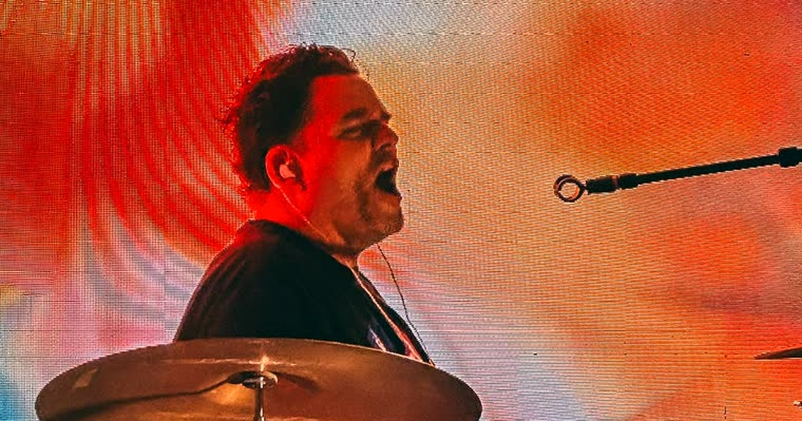

Drumming Is Cardio. So I Built an Apple Watch App to Prove It
Four years ago I decided to get healthy. I've lost a lot of weight since then, and my Apple Watch has been along for all of it. Swimming, walking, closing the rings. It's great at the usual things.
Then I'd finish a three hour gig with The Pollies, soaked through, and the best the watch could offer was a generic "Light Cardio" workout. It had no idea what I'd actually done.
I swim every week and I play drums every week, and only one of them was getting measured. That bugged me enough to build something.
drumming clip, Mario to add. Suggest 30 to 60 seconds, horizontal, with the watch visible on the wrist if possible.
The number I couldn't see before
Here's a real night. July 15, a Pollies set that started at 8:17 PM.
Two hours, forty minutes, thirty-five seconds. 1,642 calories. Saved to Apple Health, counting toward the rings.
The calories are an estimate, built on the standard MET formula with your weight and an intensity setting. But even as an estimate, it changed how I think about a gig. It isn't a night off from exercise. It's a long, loud cardio session where I happen to be playing songs.

Then I wanted more than a calorie counter
The second reason I built this is the one only a drummer will care about. I wanted to know if I was getting better.
Every drummer knows the gap between a set that felt great and a recording that says otherwise. I wanted to know whether I rush, whether I drag, and whether I fade as the night goes on. I already suspected the last one, because when I get tired in practice the beat settles back, but I had no way to prove it.

What the data actually said
That July 15 set was 13,864 hits. I didn't fade. I got tighter. Timing went from about ±28 ms to ±25 ms across the night. My sloppiest stretch was around minute 18. My tightest was around minute 125.
So I warm up on stage, and the early songs pay the price. Good to know.
It caught something else too. In 13 of the 21 songs it analyzed, my tempo climbed inside the song. I push. Most drummers do. I'd just never seen it laid out song by song.


How it works
The watch reads its accelerometer about 100 times a second. Every stick strike makes a spike in the motion of your wrist. DrumPulse finds the spikes, timestamps each one, and compares it to a metronome grid, or in Free Play, to your own groove. No microphone. No sensors on the drums. It works on a kit, a practice pad, or your knee.
Every formula is on a public page with worked examples, so nothing is a black box. And it stays private. No account, no analytics, no servers.
Why I'm sharing this here
My day job is CTO work, with big systems and long roadmaps. DrumPulse is the opposite of that, and that's why I keep coming back to projects like it. I had one annoying problem and one question I wanted answered, and I was the only user I had to satisfy. There is a lot to learn from building that way, and I bring some of it back to the office.
It also changed how I think about health. Three hours behind a kit on a Saturday night counts just as much as a swim, and now my watch agrees.
Know a drummer? Send them this
If you play drums and wear an Apple Watch, DrumPulse is on the App Store for $3.99. No subscription. Tell me what it gets wrong. I read all of it.
And if you don't play but you know someone who does, please share this with them. It doesn't matter if they're a touring pro or a kid on a practice pad in the garage. I'd love to hear from drummers at every level.
Full write-up with all the screenshots: https://mariothemaker.com/posts/drumpulse-drumming-is-cardio.html
DrumPulse on the App Store: https://apps.apple.com/app/id6782245341
Site and the math behind the scores: https://drumpulseapp.com
Instagram: @drumpulseapp
The Pollies: https://themiamipollies.com